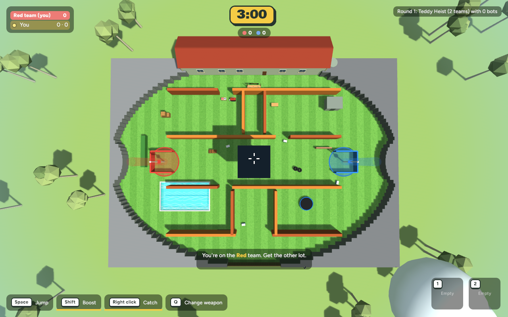

Coloured, shape-based emblems identify each base above its walls. The yard is larger and the center maze has staggered routes.

See the expanded-map review for details.
The scripted carry sequence creates sample frames at frame 50 while carried and frame 73 after delivery and return to first-person. Both characters are visible in the outside carried view. Please try a real two-player carry and throw to check it across normal play.
Dazza now lifts his spatula when a fast steak or fish flies close to the grill. This visual-only reaction needs a quick in-game pass with thrown food near him.
See the checkpoint notes for build and test details.